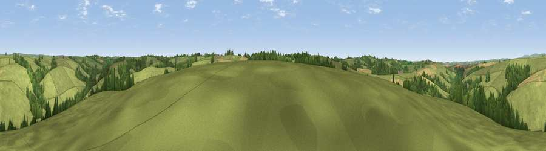

Viewpoint near Meshaw
#30376 in England · top 59% of its area beats it · near MeshawWhere it is
The exact computed spot (SS 75325 19975). Click the marker for map links.
The view, rendered

A 360° render of this exact spot computed from the terrain model, tree cover and land cover — summer colours, afternoon light, calibrated against photographs of famous viewpoints. Real trees, hedges and buildings will differ in detail.
The panorama
Grey silhouette: terrain skyline in each direction (720 bearings, Earth curvature and refraction included). Dashed green: skyline with trees (+15 m) and buildings (+8 m) as obstacles. Blue strip: how far the ground is visible on each bearing.
Where the view opens
Wedge length = distance to the farthest visible ground on that bearing (vegetation-aware). Rings at 10, 25 and 50 km.
What fills the view
80% grassland · 14% woodland · 6% cropland
Angular shares of the visible panorama (visual magnitude), not map area. Landscape diversity 0.28 (0–1 Shannon).
Key numbers
More beautiful places nearby
The staircase of upgrades: each row has a higher view potential than everything closer. Driving times are estimates from straight-line distance, calibrated against real road routing — check an actual route before setting out.
| Place | Direction | Drive | Score |
|---|---|---|---|
| Viewpoint near Mariansleigh | N · 1 km | ~4 min | 55.9 |
| Viewpoint near Mariansleigh | NNW · 3 km | ~6 min | 57.2 |
| Viewpoint near Romansleigh | WSW · 3 km | ~7 min | 59.5 |
| Viewpoint near Romansleigh | WSW · 3 km | ~8 min | 59.6 |
| Viewpoint near Romansleigh | WNW · 4 km | ~9 min | 61.8 |
| Viewpoint near George Nympton | W · 6 km | ~13 min | 65.8 |
| Viewpoint near Stags Head | NNW · 10 km | ~20 min | 68.1 |
| Viewpoint near Twitchen | N · 13 km | ~23 min | 69.1 |
50.96566, -3.77684 · source: screening · position refined by local search. Computed location — check access rights before visiting.